자동차정비기사 (2019-03-03 기출문제)
1과목: 일반기계공학
1. 그림과 같은 외팔보의 자유단 끝단에서 최대처짐량을 구하는 식은? (단, L=a+b)
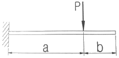
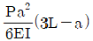
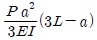
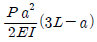
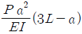
(정답률: 42%)
2. 하중이 5kN 작용하였을 때, 처짐이 200mm인 코일스프링에서 소선의 지름이 20mm일 때 이 스프링의 유효 감김수는? (단, 스프링지수(C)는 10, 전단탄성 계수(G)는 8×102N/mm2, 왈의 수정계수(K)는 1.2이다.)
- 6
- 8
- 10
- 12
(정답률: 40%)

3. 그림과 같은 원통 용기의 하부 구멍A의 단면적이 0.⑤m2이고 이를 통해서 물이 유출할 때 유량은 약 m3/s 인가? (단, 유량계수는 C=0.6, 높이는 H=2m 로 일정하다.)
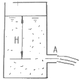
- 0.19
- 0.38
- 1.8
- 3.74
(정답률: 44%)
4. 다음 키의 종류 중 일반적으로 가장 큰 토크를 전달할 수 있는 키는?
- 묻힘 키
- 납작 키
- 접선 키
- 스플라인
(정답률: 56%)
5. 왁스, 파라핀 등으로 만든 주형재를 사용하여 치수가 정밀하고 면이 깨끗한 복잡한 주물을 얻을 수 있는 주조법은?
- 셀몰드법
- 다이캐스팅법
- 이산화탄소법
- 인베스트먼트법
(정답률: 60%)
6. 탄소강에 관한 일반적인 설명으로 옳지 않은 것은?
- 용융온도는 탄소함유량에 따라 다르다.
- 탄소강은 다른 재료에 비하여 대량 생산이 가능하다.
- 탄소함유량이 많을수록 인장강도는 커지나 연성은 낮다.
- 탄소함유량이 적은 것은 열간가공과 냉간가공이 어렵다.
(정답률: 54%)
7. 기어, 클러치, 캠 등과 같이 내마모성과 더불어 인성을 필요로 하는 부품의 경우는 강의 표면 경화법으로 처리한다. 강의 표면 경화법에 해당하지 않는 것은?
- 질화법
- 템퍼링
- 고체체침탄법
- 고주파경화법
(정답률: 55%)
8. 절삭가공에 이용되는 성질로 적합한 것은?
- 용접성
- 연삭성
- 용해성
- 통기성
(정답률: 64%)
9. 보일러와 같이 기밀을 필요로 할 때 리베팅 작업이 끝난 뒤에 리벳머리의 주위와 강판의 가장 자리를 75º ~85º 가량 정(chisel)과 같은 공구로 때리는 작업은?
- 굽힘작업
- 전단작업
- 코킹작업
- 펀칭작업
(정답률: 62%)
10. 평벨트 풀리의 종류는 림의 폭 중앙이 볼록한 C형과 림의 폭 중앙이 편평한 F형이 있다. 여기서 C형 림의 폭 중앙에 크라운 붙임(crowning)을 두는 이유로 가장 적적한 것은?
- 벨트의 손상을 방지하기 위하여
- 벨트의 끊어짐을 방지하기 위하여
- 벨트가 벗겨지는 것을 방지하기 위하여
- 주조할 때 편리하도록 목형 물매를 두기 위하여
(정답률: 64%)
11. 길이 L의 환봉을 압축하였더니 30cm로 되었다. 이 때 변형률은 0.0006 이라고 하면 원래의 길이는 약 몇cm인가?
- 30.09
- 30.18
- 30.27
- 30.36
(정답률: 53%)
12. 그림과 같이 원형단면의 지름 d인 관성모멘트는
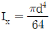
이다. 원에 접하는 접선축에 대한 평행축의 정리를 활용하여 관성 모멘트(Ix)를 구하면?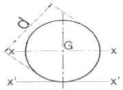
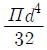
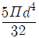
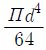
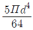
(정답률: 29%)
13. 단면적 1cm2, 길이 4m 인 강선에 2kN의 인장하중을 작용시키면 신장량은 약 몇cm인가? (단, 연강의 탄성계수는 2×106N/cm2이다.)
- 6
- 4
- 0.6
- 0.4
(정답률: 29%)
14. 일반적인 알루미늄의 성질로 틀린 것은?
- 전기 및 열의 양도체이다.
- 알루미늄의 결정구조는 면심입방격자이다.
- 비중이 2.7로 작고, 용융점이 660℃ 정도이다.
- 표면에 산화막이 형성되지 않아 부식이 쉽게 된다.
(정답률: 71%)
15. 펌프의 분류를 크게 터보식과 용적식으로 분류할 때 다음 중 용적식 펌프에 속하는 것은?
- 베인 펌프
- 축류 펌프
- 터빈 펌프
- 벌류트 펌프
(정답률: 46%)
16. 철사를 여러 번 구부렸다 폈다를 반복했을 때 철사가 끊어지는 현상은?
- 시효경화
- 표면경화
- 가공경화
- 화염경화
(정답률: 60%)
17. 축(shaft)의 종류 중 전동축의 특수한 형태로 축의 지름에 비하여 길이가 짧은 축을 의미하는 것으로 형상과 치수가 정밀하고 변형량이 극히 작아야 하는 것은?
- 자축
- 스핀들
- 유연축
- 크랭크축
(정답률: 55%)
18. 대량의 제품 치수가 허용공차 내에 있는지 여부를 검사하는 게이지로 통과측과 정지측으로 구성되어 있는 것은?
- 옵티미터
- 다이얼 게이지
- 한계 게이지
- 블록 게이지
(정답률: 54%)
19. 피복 아크 용접봉에서 피복제의 역할이 아닌 것은?
- 아크의 세기를 크게 한다.
- 용접금속의 탈산 및 정련 작용을 한다.
- 용융점이 낮은 가벼운 슬래그를 만든다.
- 용접 금속에 적당한 합금 원소를 첨가한다.
(정답률: 50%)
20. 유체기계에서 유압 제어밸브의 종류가 아닌 것은?
- 압력제어밸브
- 유량제어밸브
- 유속제어밸브
- 방향제어밸브
(정답률: 52%)
2과목: 기계열역학
21. 계의 엔트로피 변화에 대한 열역학적 관계식 중 옳은 것은? (단, T는 온도, S는 엔트로피, U는 내부 에너지, V는 체적, P는 압력, H는 엔탈피를 나타낸다.)
- TdS=dU-PdV
- TdS=dH-PdV
- TdS=dU-VdP
- TdS=dH-VdP
(정답률: 35%)
22. 다음 중 강도성 상태량 (Intensive property)이 아닌 것은?
- 온도
- 압력
- 체적
- 밀도
(정답률: 55%)
23. 그림과 같은 단열된 용기 안에 25℃의 물이 0.8m 들어있다. 이 용기 안에 100℃, 50kg의 쇳덩어리를 넣은 후 열적 평형이 이루어 졌을 때 최종 온도는 약 몇 ℃인가? (단, 물의 비열은 4.18kJ/(kgㆍK), 철의 비열은 0.45kJ/(kgㆍK)이다.)
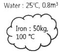
- 25.5
- 27.4
- 29.2
- 31.4
(정답률: 30%)
24. 어떤 기체 동력장치가 이상적인 브레이턴 사이클로 다음과 같이 작동할 때 이 사이클의 열효율은 약 몇 %인가? (단, 온도(T)-엔트로피(S) 선도에서 T1=30℃, T2=200℃, T3=1060℃, T4=160℃이다.)
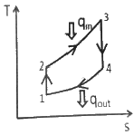
- 81%
- 85%
- 89%
- 92%
(정답률: 38%)
25. 이상기체 1kg이 초기에 압력 2kPa, 부피 0.1m3를 차지하고 있다. 가역등온과정에 따라 부피가 0.3m3로 변화했을 때 기체가 한 일은 약 몇 J인가?
- 9540
- 2200
- 954
- 220
(정답률: 38%)
26. 이상적인 오토사이클에서 열효율을 55%로 하려면 압축비를 약 얼마로 하면 되겠는가? (단, 기체의 비열비는 1.4이다.)
- 5.9
- 6.8
- 7.4
- 8.5
(정답률: 39%)
27. 실린더에 밀폐된 8kg의 공기가 그림과 같이 P1=800kPa, 체적 V1=0.27m3에서 P2=350kPa, 체적 V2= 0.80m3으로 직선 변화하였다. 이 과정에서 공기가 한 일은 약 몇 kJ 인가?
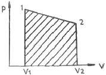
- 3⑤
- 334
- 362
- 390
(정답률: 44%)
28. 체적이 일정하고 단열된 용기 내에 80℃, 320kPa의 헬륨 2kg이 들어 있다. 용기 내에 있는 회전 날개가 20W의 동력으로 30분 동안 회전한다고 할 때 용기 내의 최종 온도는 약 몇 ℃인가? (단, 헬륨의 정적비열은 3.12kJ/(kgㆍK)이다.)
- 81.9℃
- 83.3℃
- 84.9℃
- 85.8℃
(정답률: 35%)
29. 밀폐계가 가역정압 변화를 할 때 계가 받은 열량은?
- 계의 엔탈피 변화량과 같다.
- 계의 내부에너지 변화량과 같다.
- 계의 엔트로피 변화량과 같다.
- 계가 주위에 대해 한 일과 같다.
(정답률: 35%)
30. 유리창을 통해 실내에서 실외로 열전달이 일어난다. 이때 열전달량은 약 몇 W인가? (단, 대류열전달계수는 50W/(m2ㆍK), 유리창 표면온도는 25℃, 외기온도는 10℃, 유리창면적은 2m2이다.)
- 150
- 500
- 1500
- 5000
(정답률: 45%)
31. 600kPa, 300K 상태의 이상기체 1kmol이 엔탈피가 등온과정을 거쳐 압력이 200kPa로 변했다. 이 과정동안의 엔트로피 변화량은 약 몇 kJ/K인가? (단, 일반기체상수(R)은 8.31451 kJ/(kmolㆍK)이다.)
- 0.782
- 6.31
- 9.13
- 18.6
(정답률: 28%)
32. 어느 내연기관에서 피스통의 흡기과정으로 실린더 속에 0.2kg의 기체가 들어 왔다. 이것을 압축할 때 15kJ의 일이 필요하였고, 10kJ의 열을 방출하였다고 한다면, 이 기체 1kg당 내부에너지의 증가량은?
- 10kJ/kg
- 25kJ/kg
- 35kJ/kg
- 50kJ/kg
(정답률: 50%)
33. 다음 중 기체상수(gas constant, R[kJ/(kgㆍK)]) 값이 가장 큰 기체는?
- 산소(O2)
- 수소(H2)
- 일산화탄소(CO)
- 이산화탄소(CO2)
(정답률: 56%)
34. 압력 2MPa, 300℃의 공기 0.3kg이 폴리트로픽과정으로 팽창하여, 압력이 0.5MPa로 변화하였다. 이때 공기가 한 일은 약 몇kJ인가? (단, 공기는 기체상수가 0.287kJ/(kgㆍK)인 이상기체이고, 폴리트로픽 지수는 1.3이다.
- 416
- 157
- 573
- 45
(정답률: 27%)
35. 공기1kg이 압력 50kPa, 부피 3m3인 상태에서 압력 900kPa, 부피 0.5m3인 상태로 변화할 때 내부에너지가 160kJ증가하였다. 이 때 엔탈피는 약몇 kJ이 증가하였는가?
- 30
- 185
- 235
- 460
(정답률: 34%)
36. 그림과 같은 Rankine 사이클로 작동하는 터빈에서 발생하는 일은 약 몇 kJ/kg인가? (단, h는 엔탈피, s는 엔트로피를 나타내며, H1=191.8kJ/kg, H2=193.8kJ/kg, H3=2799.5kJ/kg, H4=2007.5kJ/kg이다.)
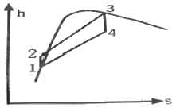
- 2.0 kJ/kg
- 792.0 kJ/kg
- 26⑤.7 kJ/kg
- 1815.7 kJ/kg
(정답률: 39%)
37. 이상기체에 대한 다음 관계식 중 잘못된 것은? (단, Cu는 정적비열, Cp는 정압비열, u는 내부에너지, T는 온도, V는 부피, h는 엔탈피, R은 기체상수, k는 비열비이다.)
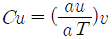
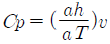
- Cp-Cu=R
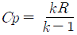
(정답률: 29%)
38. 열역학 제2법칙에 관해서는 여러 가지 표현으로 나타낼 수 있는데, 다음 중 열역학 제2법칙과 관계되는 설명으로 볼 수 없는 것은?
- 열을 일로 변환하는 것은 불가능하다.
- 열효율이 100%인 열기관을 만들 수 없다.
- 열은 저온 물체로부터 고온 물체로 자연적으로 전달되지 않는다.
- 입력되는 일 없이 작동하는 냉동기를 만들 수 없다.
(정답률: 36%)
39. 터빈, 압축기, 노즐과 같은 정상 유동장치의 해석에 유용한 몰리에(Mollier) 선도를 옳게 설명한 것은?
- 가로축에 엔트로피, 세로축에 엔탈피를 나타내는 선도이다.
- 가로축에 엔탈피, 세로축에 온도를 나타내는 선도이다.
- 가로축에 엔트로피, 세로축에 밀도를 나타내는 선도이다.
- 가로축에 비체적, 세로축에 압력을 나타내는 선도이다.
(정답률: 55%)
40. 시간당 380000kg의 물을 공급하여 수증기를 생산하는 보일러가 있다. 이 보일러에 공급하는 물의 엔탈피는 830kJ/kg이고, 생산되는 수증기의 엔탈피는 3230kJ/kg 이라고 할 때, 발열량이 32000kJ/kg인 석탄을 시간당 34000kg씩 보일러에 공급한다면 이 보일러의 효율은 약 몇 %인가?
- 66.9%
- 71.5%
- 77.3%
- 83.8%
(정답률: 36%)
3과목: 자동차기관
41. 디젤기관의 노크를 방지하기 위한 대책으로 틀린 것은?
- 착화성을 좋게 한다.
- 압축비를 높게 한다.
- 착화지연기간을 길게 한다.
- 흡입공기의 온도를 상승시킨다.
(정답률: 73%)
42. 자동차 배출가스의 주된 생성원이 아닌 것은?
- 배기가스
- ERG가스
- 연료증발가스
- 블로우바이가스
(정답률: 60%)
43. 자동차엔진의 실린더 내 압력변화를 측정하여 작성한 지압선도를 통해 파악 가능한 것이 아닌 것은?
- 회전속도
- 점화시기
- 압력상승속도
- 사이클 진행과정
(정답률: 57%)
44. 피스톤 지름이 100mm, 크랭크축의 회전반경이 50mm인 엔진에서 압축비를 9:1로 만들려면 연소실 체적은 약 몇 cc인가?
- 72
- 78
- 88
- 98
(정답률: 41%)
45. 자동차엔진에 사용되는 LPG의 특징으로 틀린 것은?
- 공기보다 가볍다.
- 증발 잠열이 크다.
- 액화시 체적이 감소한다.
- 기화 및 액화가 용이하다.
(정답률: 69%)
46. 디젤엔진의 기계식 분사펌프에서 캠축의 캠 형상과 연료분사특성에 대한 설명으로 틀린 것은?
- 캠의 형상은 연료의 분사율에 영향을 준다.
- 캠의 형상은 연료의 분사량에 영향을 준다.
- 캠의 형상은 연료의 분사각도에 영향을 준다.
- 캠의 형상은 연료의 분사시기에 영향을 준다.
(정답률: 54%)
47. 엔진에서 사용되는 캠축의 구동방식이 아닌 것은?
- 체인 구동식
- 밸트 구동식
- 기어 구동식
- 오일 구동식
(정답률: 76%)
48. 엔진에서 패스트 아이들 기능에 대한 설명으로 옳은 것은?
- 엔진 워밍업 시간을 단축한다.
- 연료계통 내의 연료 빙결을 방지한다.
- 고속주행 후 감속
- 급감속시 공기가 갑자기 차단되는 것을 방지한다.
(정답률: 72%)
49. 산소센서의 기능에 대한 설명으로 옳은 것은?
- 유해배출가스 중 NOx를 감소시키는 역할을 한다.
- 흡기 매니폴드에 산소를 공급하는 역할을 한다.
- 직접적으로 연료와 산소 혼합비를 적절하게 조정한다.
- 배기가스 중 산소의 농도를 감지하여 출력전압을 보내준다.
(정답률: 74%)
50. 가솔린엔진과 비교한 디젤엔진의 장점은?
- 열효율이 좋다.
- 시동성이 좋다.
- 매연 발생이 적다.
- 마력 당 엔진의 중량이 무겁다.
(정답률: 72%)
51. LPG엔진의 특징으로 틀린 것은?
- 증기폐쇄가 일어나지 않는다.
- 연소효율이 낮아 출력이 떨어진다.
- LPG의 연속속도는 가솔린 보다 느리다.
- 옥탄가가 높아 노킹이 잘 일어나지 않는다.
(정답률: 43%)
52. 자동차엔진의 축출력(PS)을 구하는 식은? (단, W는 동력계 하중(kgf), L은 동력계 암 길이(m), n은 회전수(rpm)이다.)
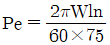
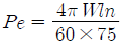
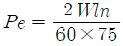
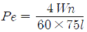
(정답률: 51%)
53. 전자제어 가솔린엔진에서 연료펌프의 릴리프 밸브의 역할로 옳은 것은?
- 베이퍼록을 방지한다.
- 연료의 리턴을 방지한다.
- 연료의 압력을 높여 준다.
- 일정압력 이상이 되지 않도록 한다.
(정답률: 67%)
54. 다음 선도는 자동차엔진의 성능곡선을 나타낸 것이다. 성능곡선 A, B, C는 각각 무엇을 나타내는 곡선인가? (단, F는 연료소비율, P는 축출력, T는 축토크)
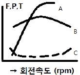
- A : F곡선, B : T곡선, C : P곡선
- A : T곡선, B : P곡선, C : F곡선
- A : T곡선, B : F곡선, C : P곡선
- A : P곡선, B : T곡선, C : F곡선
(정답률: 51%)
55. 디젤 산화촉매기(DOC)의 설명으로 틀린 것은?
- HC 가스를 포집한다.
- 촉매물질은 Pt, Pd, Rh 등이 있다.
- 담체 재료는 AlO3, CeO2, ZrO2등이 있다.
- 세라믹 또는 금속의 담체로 구성되어 있다.
(정답률: 60%)
56. 가변 흡기제어장치의 구성요소가 아닌 것은?
- 서보모터
- 배기제어밸브
- 흡기제어밸브
- 흡기제어밸브 위치센서
(정답률: 69%)
57. 가솔린엔진의 윤활장치에서 유압이 낮아지는 원인으로 거리가 먼 것은?
- 오일여과기 막힘
- 오일펌프의 마멸
- 엔진오일의 점도가 높음
- 유압 조절밸브 스프링 장력의 약화
(정답률: 62%)
58. 경유사용자동차의 정기검사에서 매연농도를 측정한 결과 45%, 42%, 35%이었다. 최대치와 최소치의 편차가 5%를 벗어나 2회 추가 측정한 값이 42%, 39%라면 산술 평균한 최종측정치는 몇 %인가?
- 40
- 41
- 42
- 43
(정답률: 55%)
59. 점화시기가 늦을 때 일어나는 현상으로 옳은 것은?
- 열효율이 높게 된다.
- 엔진 출력이 낮아진다.
- 배거색이 청색이 된다.
- 커넥팅로드에 변형이 생긴다.
(정답률: 63%)
60. 디젤엔진의 기계식 연료분사장치에서 연소과정에 영향을 주는 변수와 가장 거리가 먼 것은?
- 분사 방향
- 무효 분사 시간
- 연료 분사 시기
- 분사지속 시간과 분사율
(정답률: 56%)
4과목: 자동차새시
61. 자동차 섀시 스프링의 스프링 위 질량 진동과 관계없는 것은?
- 서징
- 바운싱
- 롤링
- 피칭
(정답률: 71%)
62. 빙판이나 진흙탕에서 구동바퀴가 공회전만 하고 차가 움직이지 못하는 경우가 있다. 이러한 현상을 방지하기 위한 것은?
- MPS (Motor Position Senor)
- ABS (Anti-lock Brake System)
- TCS(traction Control System)
- ECS (Electronic Control System)
(정답률: 76%)
63. 제동 시 후륜에서 전륜으로 하중이 이동된 만큼 후륜의 휠실린더에 작용하는 유압을 감소시켜 타이어의 잠김 현상을 방지하는 유압 구성품이 아닌 것은?
- 언로더 밸브
- 프로포셔닝 밸브
- 듀얼 프로포셔닝 밸브
- 로드 센싱 프로포셔닝 밸브
(정답률: 49%)
64. 차륜 정렬작업을 위한 예비점검 내용으로 틀린것은?
- 타이어의 공기압을 점검한다.
- 현가장치의 절손 상태를 점검한다.
- 등속 조인트이 마모 여부를 점검한다.
- 브레이크 밟지 않은 상태에서 디스크와 라이닝에 제동현상이 일어나는지를 점검한다.
(정답률: 50%)
65. 수동변속기에서 주축 입력기어 잇수 Z1=25,부축 입력 기어 잇수 Z2=41, 부축 1단 기어 잇수 Z3=21, 주축 1단 기어 잇수 Z4=45이다. 엔진회전수가 3600rpm일 때, 이 수동 변속기의 1단 변속비와 1단에서의 변속기 출력축 회전수는?
- 약 0.285, 약 1026rpm
- 약 0.765, 약 2754rpm
- 약 1.306, 약 2757rpm
- 약 3.514, 약 1024rpm
(정답률: 27%)
66. ABS(Anti-lock Brake System)의 기능이 아닌 것은?
- 스핀 증대
- 조향성 확보
- 제동 안정성 유지
- 방향 안정성 확보
(정답률: 74%)
67. 선회 시 코너링 포스에 영향을 미치는 것으로 거리가 먼 것은?
- 제동능력
- 현가방식
- 타이어의 분담하중
- 현가스프링의 롤링 강성
(정답률: 67%)
68. 전진 또는 후진에서 모두 자기작동작용이 일어나 강력한 제동력을 발생시키는 브레이크는?
- 넌 서보 브레이크
- 유니 서보 브레이크
- 듀오 서보 브레이크
- 멀티 서보 브레이크
(정답률: 67%)
69. 추진축의 회전토크 14kgfㆍm, 타이어 반경 0.35m, 종감속비 6.5인 자동차에서 타이어에 작용하는 구동력은 약 몇 kgf인가? (단, 기계손실은 무시한다.)
- 250
- 260
- 270
- 280
(정답률: 53%)
70. 전자제어 자동변속기를 구성하는 주요부품 중 출력축의 회전수를 검출하는 부품은?
- 인히비터 스위치
- 펄스 제너레이터-B
- 펄스 제너레이터-A
- 파워/노멀/홀드 스위치
(정답률: 65%)
71. 공기식 브레이크 장치에서 캠축을 회전시키는 역할을 하면서 브레이크 드럼 내부의 브레이크 슈와 드럼 사이의 간극을 조정하는 부품은?
- 슬랙 조정기
- 브레이크 밸브
- 브레이크 챔버
- 브레이크 릴레리 밸브
(정답률: 61%)
72. 자동 변속기의 변속 패턴에 대한 설명으로 옳은 것은?
- 고부하 시 기어 변속단은 고단이 된다.
- 차량의 주행 속도가 빨라지면 기어는 저단으로 변속된다.
- 고단기어 주행 모드에서 가속 페달을 놓으면 기어의 위치는 고단으로 유지된다.
- 스포츠 모드에서의 변속은 이코노미 모드에서 보다 기어의 변속이 빠르게 고단으로 바뀐다.
(정답률: 47%)
73. 수동변속기 차량에서 기어 변속 레버를 중립 위치에 놓아도 소음이 발생하는 원인으로 가장 적합한 것은?
- 변속 포크가 변형되었다.
- 오일이 과다 주입되었다.
- 싱크로나이저가 손상되었다.
- 구동기어 베어링이 손상되었다.
(정답률: 45%)
74. 공기저항에 대한 설명 중 틀린 것은?
- 자동차 표면에 흐르는 공기와의 마찰 저항
- 자동차가 속도를 감속 시 발생되는 관성에 의한 저항
- 자동차가 고속 주행할 때 양력의 발생으로 생기는 유도 저항
- 차체 앞부분에서의 압력과 뒷부분에서 생기는 부압과의 압력 차이로 발생되는 저항
(정답률: 54%)
75. 전자제어 현가장치의 입력요소가 아닌 것은?
- 조향각센서
- 충격센서
- 차고센서
- G센서
(정답률: 64%)
76. 타이어 공기압이 규정보다 낮은 상태에서 고속주행 시 일정 속도 이상이 되면 타이어 접지부의 부근이 부풀어 물결처럼 주름이 생기는 현상은?
- 플랫 스폿
- 베이퍼 록
- 스탠딩 웨이브
- 하이드로 플래닝
(정답률: 71%)
77. 스러스트 각에 대한 설명으로 틀린 것은?
- 스러스트 각이 크면 좌우 선회 시 오버 스티어링 현상만 발생한다.
- 스러스트 각은 뒷바퀴가 정렬에서 벗어난 상태의 각을 확인하기 위한 것이다.
- 스러스트 각이 크면 바퀴의 궤적이 다르게 통과되어 운전감각이 흐트러진다.
- 자동차의 기하학적 중심선과 뒷바퀴의 추진선이 이루는 각도를 의미한다.
(정답률: 60%)
78. 주행 중 조향핸들이 무거워지는 원인으로 틀린 것은?
- 앞 타이어의 마모가 심하다.
- 앞 타이어 공기가 과다하다.
- 볼 조인트가 과도하게 마모되었다.
- 조향기어 박스의 오일이 부족하다.
(정답률: 64%)
79. 다음은 TPMS의 압력센서를 설명한 것이다. ( )에 들어갈 내용으로 옳은 것은?
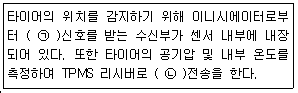
- ㉠ RF, ㉡ LF
- ㉠ MF, ㉡ TF
- ㉠ TF, ㉡ MF
- ㉠ LF, ㉡ RF
(정답률: 53%)
80. 종감속 기어의 종류에 해당되지 않는 것은?
- 스퍼 베벨 기어
- 하이포이드 기어
- 더블 헬리컬 기어
- 스파이럴 베벨 기어
(정답률: 56%)
5과목: 자동차전기
81. 하이브리드 자동차의 모터 컨트롤 유닛 (MCU)에 대한 설명으로 틀린 것은?
- 고전압을 12V로 변환하는 기능을 한다.
- 회생제동 시 컨버터(AC→DC변환)의 기능을 수행한다.
- 고전압 배터리의 직류를 3상 교류로 바꾸어 모터에 공급한다.
- 회생제동 시 모터에서 발생되는 3상 교류를 직류로 바꾸어 고전압 배터리에 공급한다.
(정답률: 54%)
82. 주행 조향 보조 시스템(LKAS)에 대한 구성 요소별 역할에 대한 설명으로 틀린 것은?
- 클러스터 : 동작 상태 알림
- 레이더 센서 : 전방 차선, 광원, 차량
- LKAS 스위치 : 운전자에 의한 시스템 ON/OFF제어
- 전동식 파워스티어링 : 목표 조향 토크에 따른 조향력 제어
(정답률: 49%)
83. 에어백이 장착된 차량의 계기판에 에어백 경고등이 점등되는 원인으로 틀린 것은?
- 클럭 스프링 단선
- 점화 스위치 불량
- 충돌감지 센서 불량
- 에어백 모듈 제어선 단락
(정답률: 65%)
84. 자동차에 사용되는 CAN 통신에 대한 설명으로 틀린 것은? (단, HI-Speed CAN의 경우)
- 표준화된 통신 규약을 사용한다.
- CAN 통신 종단저항은 120 을 사용한다.
- 연결된 모든 네트워크의 모듈은 종단저항이 있다.
- CAN 통신은 컴퓨터들 사이에 신속한 정보 교환을 목적으로 한다.
(정답률: 43%)
85. 자동차의 안전기준에서 각 등화장치별 등광색 기준으로 틀린 것은?
- 번호등 - 황색
- 후미등 - 적색
- 후퇴등 - 백색
- 제동등 - 적색
(정답률: 53%)
86. 기상 엔진 사운드 시스템(VSS)에 관한 설명으로 틀린 것은?
- 엔진 구동 소리와 유사한 소리를 발생한다.
- 자동차 속도 약 40km/h 이상부터 작동한다.
- 차량 주변 보행자 주의환기로 사고 위험성이 감소한다.
- 전기차 모드에서 보행자가 차량을 인지할 수 있도록 작동한다.
(정답률: 69%)
87. 기동전동기 전류소모 시험을 하였더니 80A였다. 이 때 배터리 전압이 12V일 경우 기동전동기의 출력은 약 몇 PS인가?
- 0.90
- 0.96
- 1.30
- 1.50
(정답률: 34%)
88. 운행차 정기검사에서 경음기의 검사기준 및 방법에 관한 설명으로 틀린 것은?
- 승인받지 않은 경음기가 추가로 부착되지 않아야 한다.
- 자동차의 원동기를 가동시키지 아니한 정차 상태에서 측정한다.
- 자동차의 경음기를 3초 동안 작동시켜 최대 소음도를 측정한다.
- 2개 이상의 경음기가 장치된 자동차는 경음기를 동시에 작동시킨 상태에서 측정한다.
(정답률: 40%)
89. 자동차의 에어백 장치에서 에어백 컨트롤 유닛에 입력되는 신호가 아닌 것은?
- 버클 센서 신호
- 가속도 센서 신호
- 충돌 감지 센서 신호
- 브레이크 압력 센서 신호
(정답률: 49%)
90. 자동차 납산 배터리의 자기방전에 대한 설명으로 틀린 것은?
- 양극판은 과산화납으로 음극판은 해면상납으로 변하면서 방전된다.
- 전해액 중에 불순물이 혼입되어 국부전지가 형성 되었을 때 방전된다.
- 탈락한 작용물질이 극판의 아래 부분이나 측면에 퇴적되었을 때 방전된다.
- 배터리 케이스의 표면에 부착된 전해액이나 먼지 등에 의한 누전으로 방전된다.
(정답률: 62%)
91. 점화장치에서 점화코일에 고압의 2차 전압이 발생되는 시기로 옳은 것은?
- 파워트랜지스터가 통전 시작 전
- 파워트랜지스터가 통전 중 일 때
- 파워트랜지스터가 'OFF'상태에서 'ON'되는 순간
- 파워트랜지스터가 'ON' 상태에서 'OFF'되는 순간
(정답률: 61%)
92. 자동차에서 3상 교류발전기의 권선결선을 △결선 대신 Y결선으로 하는 이유로 가장 적합한 것은?(오류 신고가 접수된 문제입니다. 반드시 정답과 해설을 확인하시기 바랍니다.)
- 3배의 높은 전압을 얻을 수 있다.
- 3배의 높은 전력을 얻을 수 있다.
- 선간전압은 상전압의 3제곱근 배의 전압을 얻을수 있다
- 선간 전류는 상전류보다 높은 전류를 얻을 수 있다.
(정답률: 55%)
93. 계기판의 TPMS 표시등에 대한 내용 중 틀린 것은?
- 표시등이 점멸 후 점등되면 시스템이 정상이다.
- 타이어의 공기압이 규정 이하로 부족한 경우 표시등이 점등한다.
- TPMS 시스템에 이상이 없으면 점화스위치 ON시 점등 후 소등된다.
- 주변 노이즈의 영향으로 TPMS 경고등 오작동이 발생할 수도 있다.
(정답률: 53%)
94. 자계와 자력선에 대한 설명으로 틀린 것은?
- 자계란 자기력이 작용하는 영역이다.
- 자기유도는 물체를 자기장 속에 두면 자화되는 현상이다.
- 자속은 자력선이 방향과 같은 방향이며, 단위로는 Wb/m2 사용한다.
- 자계강도는 단위자기량을 가지는 물체에 작용하는 자기력의 크기를 나타난다.
(정답률: 60%)
95. 교류발전기에서 충전전류를 측정하는 방법에 대한 설명 중 틀린 것은?
- 엔진회전수를 공회전 상태로 유지시킨 상태에서만 측정한다.
- 전류계가 열을 받기 전에 전류값 측정을 마치도록 한다.
- 충전전류를 측정할 때에는 차량의 모든 전기장치를 작동시킨 후 측정한다.
- 전류계로 측정한 전류값이 (-)이면 전류계를 반대로 설치하여 재측정한다.
(정답률: 36%)
96. 하이브리드 차량에서 화재발생 시 조치해야 할 사항이 아닌 것은?
- 화재 진압을 위해 적절한 소화기를 사용한다.
- 차량의 시동 키를 off하여 전기 동력 시스템 작동을 차단시킨다.
- 메인 릴레이(+)를 작동시켜 고전압 배터리 (+)전원을 인가한다.
- 화재 초기 상태라면 트렁크를 열고 신속히 세이프티 플러그를 탈거한다.
(정답률: 67%)
97. 엔진 노킹에 의한 실린더 블록의 진동을 검출하는 반도체 소자는?
- G 센서
- 트랜지스터
- 피에조 소자
- NTC 서미스터
(정답률: 66%)
98. 기동전동기의 회전력이 4N.m, 기동전동기의 기어 잇수가 8, 엔진의 플라이휠 링기어 잇수가 112이면 엔진을 기동시키는 회전력은 약 몇 N.m인가?
- 56
- 58
- 60
- 62
(정답률: 43%)
99. 전자제어 냉ㆍ난방에장치(FATC)에서 압축기의 작동이 컷 오프(cut off)제어되는 경우로 틀린것은?
- 냉방 효과를 높이기 위해
- 가속 성능을 높이기 위해
- 등판 성능을 향상시키기 위해
- 급출발 성능을 향상시키기 위해
(정답률: 62%)
100. 배터리 전원이 12V이고 전조등 전구가 60W 일 때 퓨즈용량을 몇 A로 설계 하여야 하는가? (단, 배선의 안전계수는 1.5이다.)
- 5.0
- 7.5
- 8.5
- 10.0
(정답률: 45%)
유효 감김수 = (하중 × 유효 감소량) / (스프링 상수 × 원래 길이)
여기서 유효 감소량은 처짐에서 스프링의 자유 길이를 뺀 값이다.
자유 길이는 스프링이 아무런 하중이 가해지지 않았을 때의 길이이다. 이 문제에서는 자유 길이가 주어지지 않았으므로, 일반적으로 스프링의 자유 길이는 원래 길이의 10% 정도이다. 따라서 이 문제에서는 자유 길이를 20mm × 1.1 = 22mm로 가정할 수 있다.
스프링 상수는 스프링지수(C)와 왈의 수정계수(K)를 곱한 값이다.
스프링 상수 = C × K = 10 × 1.2 = 12
따라서 유효 감김수는 다음과 같이 계산할 수 있다.
유효 감김수 = (5kN × (200mm - 22mm)) / (12 × 20mm) ≈ 8
따라서 정답은 "8"이다.